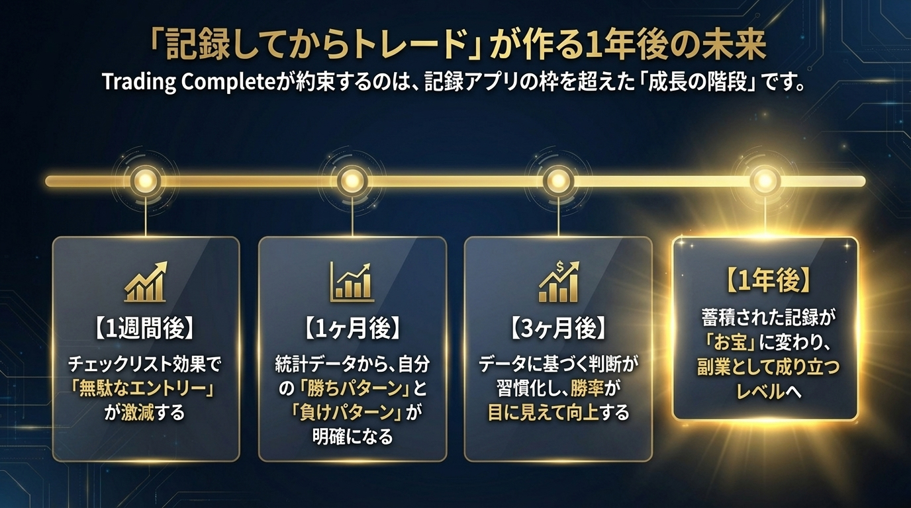
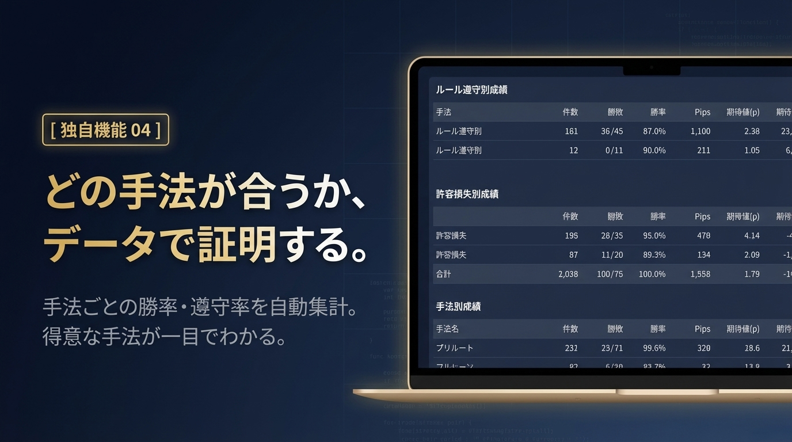
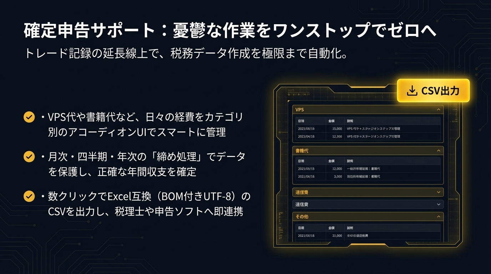

記録するだけのツールは、もういらない。
記録 → 分析 → 気づき → 成長
トレーダーのための成長支援システム。
「記録」を「規律」に変える、唯一のシステム。
複数の業者を使っているため、トータルの損益がすぐに見えない。
ルールを守れたか、手法が合っているか、振り返りができていない。
手法別の勝率や、許容損失を守れているかが見えない。
年間の計算や経費の集計に、毎年多くの時間を奪われている。
Trading Complete の哲学
他のツールは「もっと簡単に」「自動で」「ワンクリックで」と叫ぶ。
Trading Completeだけが、逆のことを言う。
「エントリーの前に、立ち止まれ。」
根拠のないトレードをいくら100回記録しても、マイナスが100回積み上がるだけ。
問題は「記録の効率」ではなく、「エントリーの質」だから。
まず検証する
エッジのある手法を確立
ルールを言語化
チェックリストに落とし込む
規律ある実行
ルール通りだけを記録
データで再検証
意味のある分析ができる
規律に変わる
感覚から脱出
Trading Completeが合わない方
Trading Completeが刺さる方
Trading Completeからの宣言
「簡単に記録を取るツールをお探しなら、
Trading Completeはあなたに合いません。」
この一文に、「そうじゃない、変わりたい」と感じた方へ。
このツールは、あなたのために作りました。
データを自動分析し、あなたの「気づき」を促します。
初心者でも「何を見ればいいか」がわかるシステム。
1回の許容損失を設定。超過したら警告。資金を守る習慣がつく。
手法ごとの勝率・期待値を自動集計。得意な手法が見える。
「ルール通りか」を記録。守れた時と守れなかった時の差が見える。
利確・損切り後にトレンドが続いたか記録。判断の精度が上がる。
※ これらの機能は、記録するほど精度が上がります

記録・分析・確定申告準備をワンストップで。
3つの根拠がないと、エントリーできない。
感覚トレードを物理的にブロック。
Excel: どんな数字でも入力できてしまう。
Trading Complete: 3つの根拠を言語化するまで、エントリーボタンは押せません。
あなたの資金を「色」で守る。
エントリー前の「最後の砦」。
ロット数を入力した瞬間、許容損失を超えていれば「赤」で警告。計算ミスも、感情的なロット超過も、システムが自動で防ぎます。もう、電卓を叩く必要はありません。
あなたの成長を「色」で可視化する。
日別損益を一目で把握し、月のリズムを掴む。

どの手法が自分に合っているか。
「感覚」ではなく「データ」で証明する。
実際の円建て損益・スワップ・手数料を記録すれば、システムがあなたの「純損益（手残り）」を自動計算。複数の通貨ペアや複数の業者をまたいでも、結局トータルで「本当はいくら儲かっているのか」が一目でわかります。

憂鬱な作業をワンストップでゼロへ。
トレード記録の延長線上で、税務データ作成を極限まで自動化。
木を見て、森も見る。
「なぜ負けたか」の背景（相場環境）まで記録できるのはTCだけ。
「記録するだけ」から「規律を構築する」への進化
| 機能 | 一般的なアプリ / Excel | Trading Complete 🚀 |
|---|---|---|
| エントリー判断 | 結果を記録するだけ | 3つの根拠を強制チェック ✓ |
| リスク管理 | 手動計算・感覚 | 3色で自動判定・警告 ✓ |
| 分析視点 | Pips中心 | 円建て純損益（手残り）＋税務対応 ✓ |
| 目的 | データの保存 | 「規律」の構築 ✓ |
Developer Story
「これは、過去のどん底にいた自分自身を
救うために作ったツールです」
金の積み立てで得た500万円を「聖杯探し」と「感情トレード」で溶かし、家庭崩壊の危機に直面
そこから過去検証と記録の徹底で立ち直るも、ExcelやノートでのいわゆるFX記録の「時間的ストレス」に限界を感じる
記録のストレスをなくし、検証と勉強の「時間（時短）」を生み出すために、約60,000行のコードをソロで構築
— Studio Compana（個人開発者・FXトレーダー 7年）
2026年3月公開。このシステムは成長を約束しない。圧倒的に成長できる「環境」を提供する。
【Premiumプラン】
¥2,980/月
¥29,800/年（2ヶ月分お得）
※ リリース時期は未定です